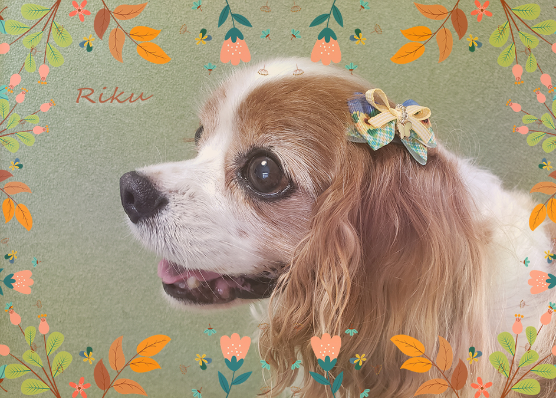

# ribbonshop

<!DOCTYPE html>
<html>

<head>
    <title>owner | sayaka kageyama</title>
    <meta name="description" content="趣味でトリマーとキャバリア用お耳リボンのハンドメイドやっているsayakaのポートフォリオサイトです。">
    <meta name="keywords" content="sayaka kageyama,owner,web,saitama">
    <meta name="author" content="sayaka kageyama">
    <meta charset="utf-8">
    <link rel="stylesheet" media="all" href="style.css" type="text/css">
    <link rel="preconnect" href="https://fonts.googleapis.com">
<link rel="preconnect" href="https://fonts.gstatic.com" crossorigin>
<link href="https://fonts.googleapis.com/css2?family=Koulen&family=Macondo&family=Oleo+Script+Swash+Caps:wght@700&family=Oswald:wght@500&family=Radio+Canada&family=Roboto+Flex:opsz,wght@8..144,200;8..144,500&family=Roboto+Slab:wght@100&family=Yomogi&display=swap" rel="stylesheet">
</head>

<body>
    <header class="page-header wrapper">
        <h1><a href="index.html">Sayaka Kageyama</h1></a>
        <h2> For a good life with ALL dogs</h2>
        <nav>
            <ul>
                <li><a href="about.html">ABOUT</a></li>
                <li><a href="ribbon.html">RIBBON</a></li>
                <li><a href="trim.html">TRIMMING</a></li>
            </ul>
        </nav>
    </header>

    <div>
        
    </div>

    <div>
        <h3>わたしにできること</h3>

        <ul>
            
            <li><a href="about.html"><br>Thinking about<br>dog happiness</a></li>
            <li><a href="ribbon.html"><br>handmade ribbon<br>　for dogs</a></li>
            <li><a href="trim.html"><br>volunteer<br> trimming</a></li>
        
        </ul>
    </div>

    <footer>
        <a href="https://www.instagram.com/rikufuku.ribon/"></a>
        <a href="https://www.facebook.com/sayaka.kageyama1/"></a>
        <br>
        <p>&copy; 2022 sayaka kageyama</p>
    </footer>

</body>

</html>
